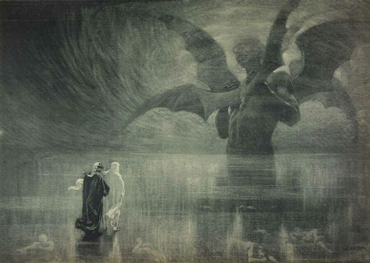

Il conte Ugolino interrompe il suo pasto macabro per narrare la propria morte per fame nella torre della Muda insieme ai figli. I poeti passano poi alla Tolomea, dove i traditori degli ospiti giacciono supini nel ghiaccio con le lacrime congelate sugli occhi. Dante scopre che la gravità del peccato fa sì che l'anima cada qui prima della morte biologica, sostituita in terra da un demonio.
Nella Giudecca i traditori dei benefattori sono interamente sommersi dal ghiaccio. Al centro della terra si staglia Lucifero, mostro immenso con tre teste che maciulla nelle sue bocche Giuda, Bruto e Cassio. Virgilio e Dante si aggrappano al suo pelo peloso, scendono oltre il centro di gravità terrestre e risalgono lungo la "natural burella" fino a rivedere le stelle.
